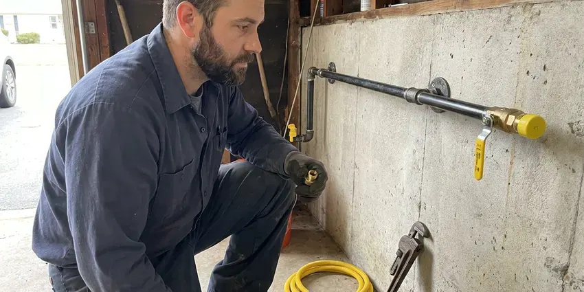

Basement Sump Pump Installation in Clovis, NM
New sump pits, cast iron pumps and battery backups for Clovis basements. GVK Plumbing sizes each pump to your actual inflow.
- Licensed Plumbers
- Local New Mexico Company
- High Water Alarms
- Cast Iron Pumps On the Truck

Sump Pump Installation in Clovis, NM, Done in One Visit
We can usually get a plumber out to look at your pit this week. Call for a written price.
Sump Pump Installation for Clovis, NM Homes With Lower Levels
A wet basement in Clovis usually tells you where the problem is. Check the seam where the floor meets the wall or a puddle near the floor drain after a hard rain, and you have found the spot a pit belongs. We dig there. Our plumbers set the pit and pump, add a check valve, and send the water to a spot that can take it anywhere in New Mexico.
Work we handle every week:
- Slab saw cutting and pit excavation in clay and rock
- Pit placement at the true low point of the floor
- Water-powered and battery backup pumps

Additional Plumbing Installation Services in Clovis, NM
We install water heaters, pumps, lines, and fixtures across Clovis, NM with precision workmanship that meets every local code.




Gas Line Installation near Clovis

Customers
Why Choose GVK Plumbing for Basement Sump Pump Installation in Clovis, NM?
Basements in Clovis come in every style. Poured walls leak at tie holes, while block and fieldstone seep almost everywhere, so we look at how water enters before we decide where the pit goes and whether drain tile should feed it. That changes the plan.
- Backup Ready, Battery backups keep pumping when storms knock out power.
- Quality Equipment, Cast iron pumps from Zoeller, Liberty and Wayne, never bargain plastic.
- Foundation Protection, Pulling groundwater away from the footing cuts hydrostatic pressure on the walls.
Citywide Coverage
Light commercial work counts too. Small offices and storefronts with basements are part of our work throughout Clovis, using the same cast iron pumps and the same discharge rules that we follow on houses, scaled up where the flow demands it. We can add duplex panels.
Experienced Team
Pedestal pumps, submersibles, battery backups and duplex panels are all routine for our team. They stay current on new switch and alarm designs, because a pump is only as good as the switch that tells it to start, and switch failure is still the most common reason a basement floods with a working motor sitting in the pit. Switches fail first.
Safety-First Approach
Water and electricity sit inches apart in a sump pit. Our plumbers mount the outlet high and strap the cord, so a pit that overflows during a storm does not reach the receptacle, and we never run cords through walls or across walkways where someone will trip. Simple, but it matters.
Trusted Certified Clovis Plumbing Services Professionals
At GVK Plumbing, we take pride in licensed, certified plumbing services throughout Clovis, NM. Credentials matter in this trade. Every repair, install and maintenance visit follows strict safety and quality rules, and the plumbers doing the work carry recognized industry credentials.
Call Us Now PHCC Plumbing Contractor Recognition
PHCC Plumbing Contractor Recognition Better Business Bureau (BBB) Accreditation
Better Business Bureau (BBB) Accreditation Angi Certified Pro
Angi Certified Pro ISO 9001 Quality Management Certification
ISO 9001 Quality Management CertificationSump Pits, Pumps and Backups in Clovis, NM
High-Capacity Sump Pump Systems in Clovis, NM
Some lots sit in a high water table and fill a standard pit every few minutes during spring. Those basements need a 1/2 or 3/4 horsepower pump in a larger basin, all sized after we time how fast your pit refills. Timing the refill comes first.

Zoeller Sump Pump Installation in Clovis
Zoeller's M53 Mighty-Mate is the cast iron pump we install more than any other. It is a 3/10 horsepower unit with a vertical float switch, and it moves about 2,580 gallons an hour at 5 feet of lift, enough for a lot of Clovis basements. Parts are easy to get.
Sump Pump Alarms and Smart Monitoring in Clovis, NM
High water alarms cost little and buy you time. A standalone unit screams when water rises above the pump float, while a Wi-Fi monitor sends a text if the level rises or the power drops, which homeowners who travel tend to like. You hear it go off before we leave.
New Sump Pit Excavation in Clovis
No pit yet? We find the low spot where water collects, saw cut the slab, dig roughly 24 to 30 inches deep, and set a liner surrounded by washed gravel so water can enter while fine soil stays out. New concrete goes back flush and level.
Emergency Sump Pump Installation in Clovis, NM
A dead pump with water rising in the pit is a same-day call. We send a plumber with a cast iron pump on the truck, pulls the old unit, checks whether the float or the check valve caused the failure, and gets water moving again in Clovis, NM. Keep a wet vac running until then.
Battery Backup Sump Pump Systems in Clovis
Outages and heavy rain tend to show up together. A battery backup keeps a second pump running without house power, and a fully charged 75 amp-hour battery can run a typical backup pump for several hours of on-and-off cycling, longer on a light night. We test it under load.
Sump Pump Installation Cost Comparison in Clovis, NM
Pricing starts with whether you already have a pit. A pump swap in an existing basin costs the least, while a new pit adds saw cutting, digging and a concrete patch, and a battery backup adds the second pump and battery on top of that. We itemize every quote.

Same-Day Sump Pump Installation in Clovis
Same-day emergency installs cover pumps that quit in the middle of a storm. First we get the standing water out of the pit, then set a new pump on a new check valve, plug it into a tested GFCI outlet and watch it run through several cycles before leaving your Clovis basement. Then we talk about a backup.
Basement Sump Pump Installation Near Me in Clovis, NM
Homeowners in Clovis and the towns around it call us when the old pump starts cycling every few minutes or stops altogether. Being local means we show up fast, often the same day, with pumps and liners on the truck. That saves a second trip.
Local plumbers look past the pump. We check the grading and downspouts too, because a downspout dumping beside the foundation can send more water into your pit than the groundwater does on a rainy day in Clovis. Fixing that is cheap.
GVK Plumbing at a Glance
- Fully licensed plumbing team covering Clovis, NM
- Same-day appointments and 24/7 emergency response
- Clear written estimates, no hidden fees
- 4.8-star rated by 320+ New Mexico customers
Clovis Map
Clovis Information
- Population
- 37,612
- Area codes
- Local
- Service area
- Clovis and towns within a 40 mile drive
- Nearby
- Portales, Lovington, Roswell, Hobbs
Caliche, a hard, cement-like soil layer, is common in New Mexico and can make digging for sewer and water line repairs difficult work. In Clovis, NM, a correctly sized pump lifts that water out of the pit and sends it far enough from the wall that it does not come straight back.
Expert Services
Reach out to GVK Plumbing for reliable plumbing work done by licensed pros in Clovis, NM.
Our Specialized Plumbing Services in Clovis, NM
At GVK Plumbing, we handle the full list of plumbing services across Clovis, NM. We go from leak detection all the way to full system installations, for homes and commercial buildings, and we do it quickly at a fair price. Take a look at our core services below:


How We Install Basement Sump Pumps in Clovis, NM
From the first call to the bucket test, here is what to plan for.
Request a Quote
Call (505) 581-4975 or use the online form and tell us where you see water. We set a time for a plumber to come look at the basement.
On-Site Assessment
A licensed plumber visits your Clovis home, finds the low point and checks how water gets in, then recommends a pit location and a pump type.
Professional Installation
We cut the slab if needed, set the basin, install the pump and run the discharge to meet local New Mexico codes. Every pump gets its own GFCI-protected outlet.
Frequently Asked Questions About Basement Sump Pump Installation in Clovis
Figure on roughly $800 to $2,000 for most basement sump pump installs in Clovis. The low end covers a pump swap in an existing pit, while a new pit cut through the slab, a long discharge run, or a battery backup pushes the total toward the top of that range. We quote after seeing it.
Swapping an identical plug-in pump is doable for a handy homeowner. Cutting a pit, wiring a new outlet and routing discharge are not, because a mistake there leads to a cracked slab, a shock hazard, or water pumped right back against the foundation in Clovis. Hire a licensed plumber for those.
Zoeller, Wayne, Little Giant and Liberty Pumps cover most of our installs. We pick the model by horsepower and lift, then by features like a vertical float or a built-in alarm, so the pump fits your pit, your budget and the amount of water your Clovis basement actually takes on. Cast iron is our default.
Labor on our sump pump installs is warrantied, typically for one year. Each pump also has a factory warranty, usually one to five years depending on the brand and model, and we write the exact coverage on your invoice so you know which part to call about if something fails. Keep the receipt.
Most standard installs finish within 4 to 8 hours. Long discharge runs or a new pit can add several hours, and if we need a new circuit from the panel, an electrician may need to come out the same day, which can push the job into the evening. The timeline comes with the quote.
Water conservation is a priority across the state, so low-flow fixtures and water-saving irrigation upgrades are common requests. Outages and storms arrive together, so we recommend a battery backup in most basements. It switches on by itself when the main pump loses power, and it also catches the water if the primary switch sticks or the pump simply cannot keep up with a heavy inflow. Think of it as cheap insurance.
Permit rules vary by town, including Clovis. Replacing a pump in the same pit rarely needs one, but a new pit, a new outlet or a new exit through the foundation wall often does, and we sort that out before any concrete gets cut. We handle the paperwork.
We strongly recommend professional installation. You are dealing with wiring, pipe and concrete in one job, and a bad seal on the lid, an undersized pit or a discharge that drains toward the house can leave you worse off than having no pump at all. Errors appear at the worst moment.
What People Are Saying About Our Plumbing Experts?

Angela D.
Our sump pump quit during a storm and the water was an inch from the basement carpet. GVK Plumbing put in a new pump with a battery backup that same evening. We have had two heavy rains since. It kicked on both times.
Sump Pump · Hobbs, NM
James P.
Our restaurant had a slow leak at the hand sink that was rotting the cabinet base. GVK Plumbing came in at six in the morning before prep, replaced the trap and both supply lines, and was packed up before my first cook clocked in.
Commercial Plumbing · Lovington, NMKaren W.
After our third pinhole leak in copper, we stopped patching. GVK Plumbing gave us a written plan room by room and repiped the house in PEX while we stayed in it. The crew covered our floors every morning and cleaned up every night.
Repiping · Hobbs, NM
Laura S.
Our 40 gallon tank started leaking from the bottom after thirteen years. The tech hauled the old one out, set a new unit with a fresh expansion tank, and had hot water running in about four hours. He took the old tank with him too.
Water Heater Replacement · Las Vegas, NM
Emily R.
The shutoff valve under our kitchen sink snapped off in my hand on a Sunday morning. GVK Plumbing had someone out by early afternoon. He replaced both angle stops with quarter turn valves and showed me where our main shutoff was, which I honestly did not know.
Plumbing Repair · Lovington, NMRachel N.
Hard water was leaving white crust on every faucet and our dishwasher was struggling. The tech tested the water, recommended a softener sized for a family of five, and installed it with a bypass valve in one afternoon. The spots on our glasses are gone.
Water Softener · Portales, NM